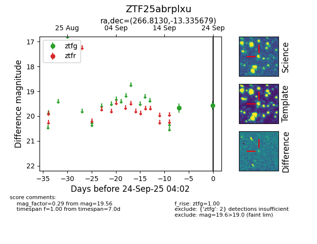

FINK: ZTF25abrplxu
Lasair: ZTF25abrplxu
ALeRCE: ZTF25abrplxu
ZTF25abrplxu (ztf,fink)
equatorial (ra, dec) = (266.8130,-13.33568)
galactic (l, b) = (13.6075,+7.71227)

last ztfg=19.56
2 ztfg detections